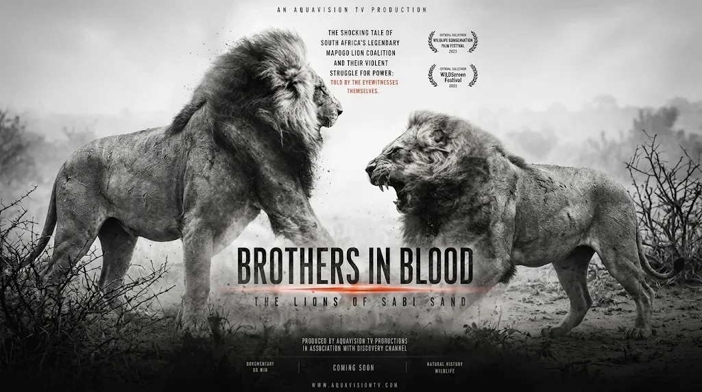

2023 yapımı Brothers in Blood: The Lions of Sabi Sand, Güney Afrika'nın Sabi Sand bölgesinde yaşayan ve Mapogo adıyla tanınan erkek aslan koalisyonunun hikâyesini anlatıyor. Film, bu aslanların bölgede kurduğu hâkimiyeti ve diğer aslan gruplarıyla yaşanan sert rekabeti, olaylara tanıklık eden kişilerin aktardıklarıyla bir araya getiriyor.
Bu anlatı, vahşi yaşamın etkileyici görüntülerinin arkasında bölge, sürü ve hayatta kalma mücadelesi bulunduğunu gösteriyor. Tanıkların geriye dönük değerlendirmeleri hikâyeye insani bir yakınlık kazandırıyor; ancak aslan davranışlarını insanların güç, kardeşlik veya intikam gibi kavramlarıyla yorumlayan anlatımın da belgeselin bakış açısının parçası olduğunu akılda tutmak gerekiyor.
Aslanları ve Afrika savanını izlemeyi sevenler için film, tek tek hayvanların kaderinden yola çıkan gerilimli bir doğa hikâyesi sunuyor. İzleyiciye aynı zamanda yırtıcılar arasındaki rekabetin yalnızca kazanan ve kaybedenlerden ibaret olmadığını; sürülerin ve yaşadıkları ekosistemin de bu değişimlerden etkilendiğini düşündürüyor.